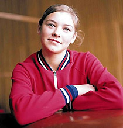

Lyubov Burda (USSR)
1972 Olympic Team Gold Medalist

|
Medal Total Olympic
Games:
2
Gold |
Lyubov was born on April 11, 1953 in Voronezh. She was coached by Yuri Shtukman, who also coached 1962 World AA bronze medalist Irina Pervushina. Burda has a UB skill named after her (underswing with 540º turn to hang, element 3.302 in the Code of Points) which she debuted at the 1967 USSR Spartakiade at the age of 14. She is married to World and Olympic champion Nikolai Andrianov, and they have two sons -- Sergei and Vladimir.
Competition Results
1967
RSFSR Championships: 7th AA, 1st UB, 1st FX
USSR Championships: 3rd AA, 2nd UB, 2nd FX
1968
Olympics: 1st Team, 25th AA
USSR Championships: 5th AA, 1st UB, 1st B, 3rd V, 3rd FX
USSR Cup: 2nd AA
1969
RSFSR Championships: 1st V
Spartakiade "Profsoyuz": 2nd Team, 1st AA, 1st
UB, 1st B, 1st FX, 2nd V
USSR Championships: 1st AA, 1st UB, 3rd FX, 5th V
USSR Cup: 6th AA
USSR-GDR-ROM: 2nd Team, 4th B
1970
Chunichi Cup: 1st AA
USSR Championships: 1st AA, 3rd V, 5th B, 6th UB
USSR Cup: 1st AA
World Championships: 1st Team, 5th AA, 3rd V,
4th UB, 6th FX
1971
Golden Sands International: 1st AA, 1st V, 1st UB, 1st B, 1st FX
Spartakiade of the Russian Federation: 1st AA
USSR Cup: 2nd AA
1972
Chunichi Cup: 7th AA
Olympics: 1st Team, 4th V, 5th FX
USSR Championships: 5th AA, 2nd V, 2nd FX, 4th B, 7th UB
USSR Cup: 4th AA
USSR-FRG-CAN: 1st Team, 2nd AA
USSR-NOR: 1st Team, 2nd AA
USSR-TCH: 1st Team, 1st AA, 1st V, 1st UB, 2nd B, 2nd FX
1973
RSFSR Championships: 1st AA, 1st V, 1st FX
University Games: 1st Team, 2nd AA, 2nd UB, 2nd B, 3rd FX
USSR Championships: 5th AA,
This page was created on March 12, 2000
and was last updated on May 14, 2026.
© Gymn Forum